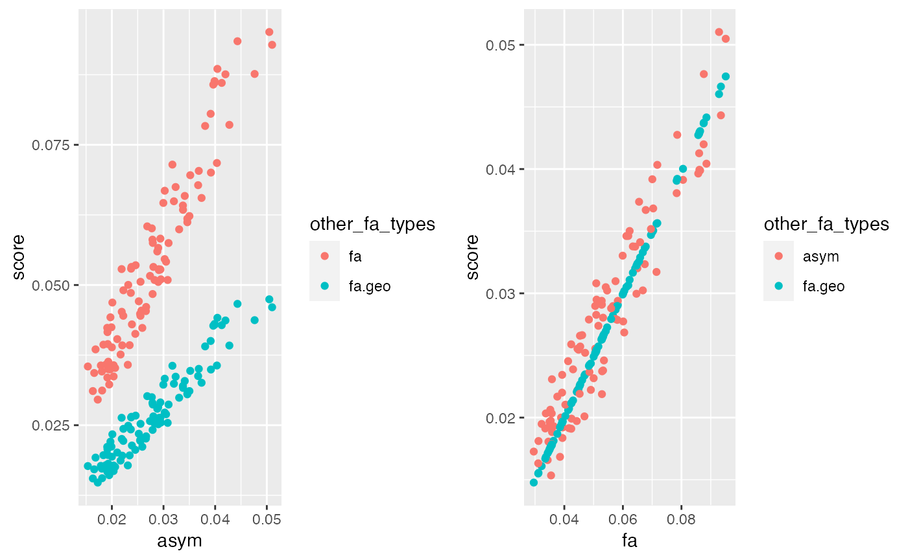

PROCEED WITH CAUTION… WORK IN PROGRESS
Load and prep data
path_to_tem <- system.file("extdata", "tem", package="facefuns")
remove_points <- c(45:50, 100:104, 116:125, 146:158, 159:164, 165:170, 171:174, 175:179, 184:185)
data <- read_lmdata(lmdata = path_to_tem,
remove_points = remove_points,
plot = FALSE)
shapedata <- facefuns2d(data = data,
pc_criterion = "broken_stick")
#> The loaded data set contains 102 specimen, delineated with 132 2-D landmarks.
#> The broken_stick criterion was used to select 8 principal components.
#> Templates were rotated using "rotateC" after the GPA.Calculate asymmetry
Needs tidying up. For now we have:
calc_as: calculates asymmetry as the Procrustes distance between each original template and its symmetrized counterpart[1]; does not correct for directional asymmetry (DA)calc_fa: calculates fluctuating asymmetry (FA) by correcting asymmetry as calculated above for DA following Klingenberg (2015)[2]; DA is calculated as the average of original templates minus the average of mirrored templatescalc_fageo: calculates FA, here usinggeomorph::bilat.symmetry. I am not entirely sure whatbilat.symmetryis doing under the hood and hence whether I’m implementing this correctly. Resulting scores are strongly correlated with the other two, but of course that doesn’t mean much
as <- calc_as(shapedata, mirroredlandmarks)
fa <- calc_fa(shapedata, mirroredlandmarks)
fa.geo <- calc_fageo(shapedata, mirroredlandmarks)
compare <- fa %>%
dplyr::left_join(fa.geo, by="id") %>%
dplyr::left_join(as, by="id") %>%
# one picture is very asymmetric (face turned sideways) and was
# excluded, so as to not inflate correlations between different scores
dplyr::filter(id != "139") %>%
dplyr::mutate(fa.geo = fa.geo/2)
as <- compare %>%
tidyr::pivot_longer(!c(id, asym),
names_to = "other_fa_types",
values_to = "score") %>%
ggplot(aes(x = asym, y = score, colour = other_fa_types)) +
geom_point()
fa <- compare %>%
tidyr::pivot_longer(!c(id, fa),
names_to = "other_fa_types",
values_to = "score") %>%
ggplot(aes(x = fa, y = score, colour = other_fa_types)) +
geom_point()
cowplot::plot_grid(as, fa, ncol = 2)
References
1. Komori, M., Kawamura, S., & Ishihara, S. (2009). Averageness or symmetry: Which is more important for facial attractiveness? Acta Psychologica, 131(2), 136–142. https://doi.org/10.1016/j.actpsy.2009.03.008
2. Klingenberg, C. P. (2015). Analyzing fluctuating asymmetry with geometric morphometrics: Concepts, methods, and applications. Symmetry, 7. https://doi.org/10.3390/sym7020843